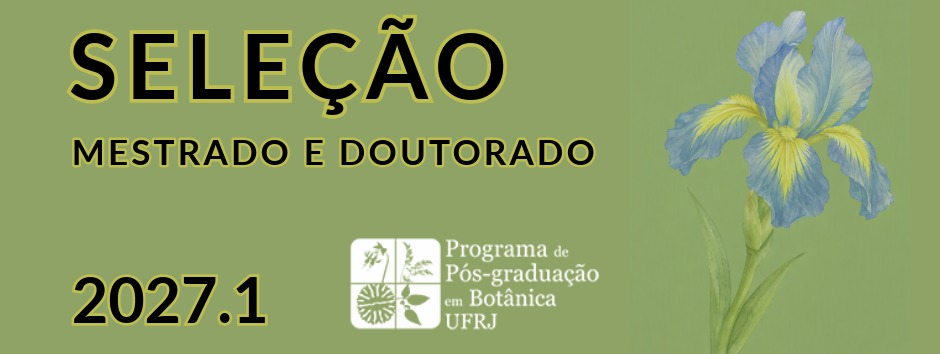
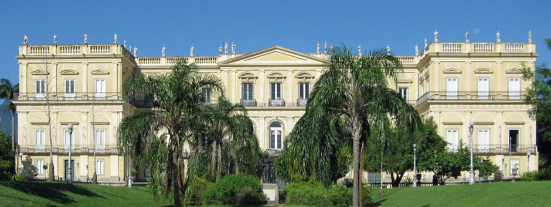
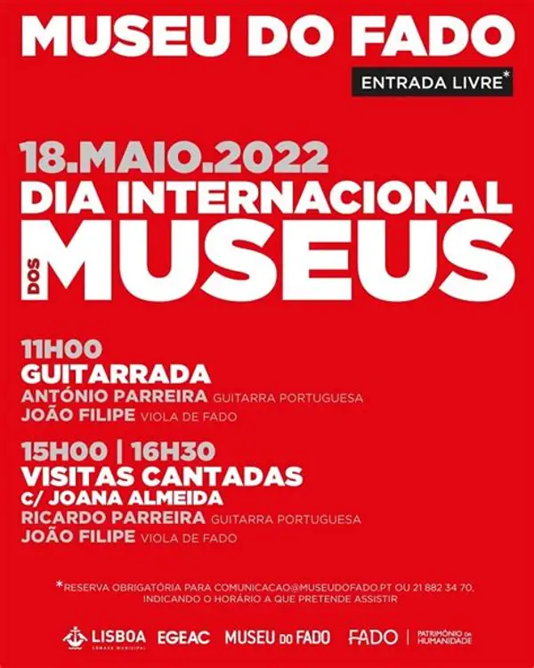

Bolsas de Doutorado
Conheça as bolsas de doutorado oferecidas pelo FCT-PRISC-UFRJ.


Conheça as bolsas de doutorado oferecidas pelo FCT-PRISC-UFRJ.

Acesso o edital do Processo seletivo para Mestrado e Doutorado do Programa de Pós-graduação em Botânica.
Venha conhecer a história e as atividades do museu.

Acesse os relatórios e acompanhe nossas atividades.

Saiba mais sobre cursos, pesquisas e inscrições.

Confira informações sobre oportunidades acadêmicas.